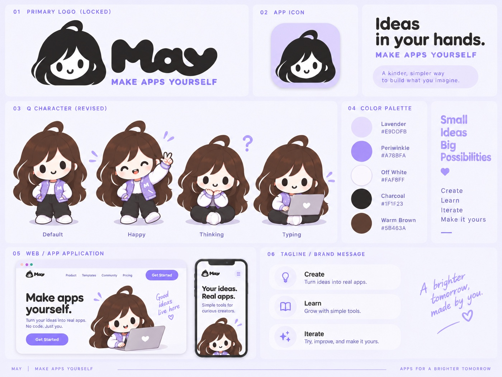

A character that tells you what the system is doing.
May is the app-building product at Zhenfy. I designed its brand identity and the character system that carries state across the product — six states, five loops, and one rule about when the character is not allowed to appear at all.
- Role
- Design Lead / Frontend
- Client
- Zhenfy LLC
- Scope
- Identity, character system, motion spec
- Year
- 2026
The problem
May generates software. That means most of what it does is invisible and slow — a brief being written, a build running, a version publishing. The interface spends a lot of its life asking the user to wait without being able to say how long.
A progress bar does not help here, because there is no honest percentage to show. So the question became: what can carry the feeling of “something is happening, and it is going fine” without lying about progress?
A fake percentage is worse than none.
The identity
A charcoal character head with a looped cowlick, paired with heavy soft lettering. The mark had to work at 1024px as an app icon and at 24px in a product header, so the symbol is drawn to survive on its own without the wordmark.
Palette
- Lavender
#E9DDFB - Periwinkle
#A78BFA - Off White
#FAF8FF - Charcoal
#1F1F23 - Warm Brown
#5B463A

Five loops, one rule each
Each state had to be distinguishable from the others at a glance, without reading a label. The separation is carried by speed: the fastest loop is machine work, the slowest is failure. Every loop below is live CSS on this page — no video, no GIF — and animates transform and opacity only.
3.6s · translateY 4px + scale 1.5%
The slowest ambient loop. It should read as presence, not activity.
4s sway ±2.2°
Brief generation and planning. Deliberately slower than the build loop so the two never feel alike.
1.1s bounce ±0.6° — the fastest loop
A run is executing. The faster cadence signals machine work rather than deliberation.
1.6s hop, spring easing
In production this plays twice and settles back into idle. Celebration should end.
5s breathe, tilted −7°, saturation 75%
May sits down rather than looking alarmed. The interface already carries the error; the character should lower the temperature, not raise it.
Asset gap. The approved sheet has four poses. The resting state above is a build-time variant of the sitting pose with the question mark erased, then tilted and desaturated. A dedicated resting pose drawn in the same style is the one asset still missing from this system.
Where May never appears
The harder half of a mascot system is deciding where it is banned. May is absent from every dense work surface — pipeline views, environments, logs, and the production publish confirmation.
A friendly mascot beside a production publish dialog undercuts the seriousness of the decision.
On those surfaces the status is carried entirely by text and an indeterminate track: start time, last activity, current stage. Nothing about the state depends on the character being there.
Four rules
- One moving thing per screen. The character or the progress element, never both competing.
- Slower means calmer. Error is the slowest loop in the system; building is the fastest.
- Transform and opacity only. No width, top, or filter animation in loops — they cost layout and paint.
- Motion is never the status. A spinner does not say what stage a run is in; text does.
Timing tokens
| Token | Value | Used by |
|---|---|---|
--dur-quick | 180ms | State swaps, button feedback, cross-fades |
--dur-calm | 900ms | Splash reveal, first paint of a panel |
--loop-work | 1.1s | Building — the fastest loop |
--loop-breathe | 3.6s | Idle presence |
--loop-think | 4s | Waiting on the agent |
| Resting breathe | 5s | Error and failed build — the slowest loop |
Accessibility
Under prefers-reduced-motion: reduce every loop stops, indeterminate tracks become static bars, and floating marks hold at 60% opacity. Nothing in the system depends on movement to be understood — each state also carries a label, a heading, and its own text in the product.
The character ships with an empty alt, because it repeats what the status line already says. State changes are announced with aria-live="polite" on the status line instead, so a screen reader hears the change once rather than twice.
The five figures above follow the same rule: they are decorative, carry empty alt text, and stop animating entirely if your system asks for reduced motion.